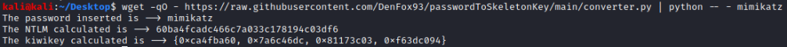

download/execute/extract file
python
directly use wget:
wget -qO - https://raw.githubusercontent.com/DenFox93/passwordToSkeletonKey/main/converter.py | python - <PASSWORD>
wget
▪ -O <file>, --output-document=<file> → the document of the url will be saved with the filename specified. If - is used as file, documents will be printed to standard output
▪ -q, --quiet → Turn off Wget's output
python
▪ - → read from standard input and not from file


Unzip file in folder
unzip -q nmap-7.91SVN-x86_64-portable.zip -d nmap-7.91